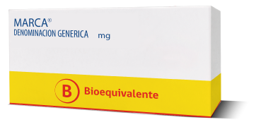

<div id="info" class="bs-conponent" ng-hide="search.results.length">
	<div class="jumbotron">
		<p class="main">
			Un <b>Bioequivalente</b> es un medicamento que ha comprobado mediante estudios cient&iacute;ficos, que tiene <b>el mismo efecto que el producto farmac&eacute;utico original.</b>
		</p>

		<p>
			Su eficacia est&aacute; certificada por el Instituto de Salud P&uacute;blica.
		</p>

		<p>
			Podr&aacute;s reconocerlos f&aacute;cilmente mediante un sello de color amarillo en su empaque, presente en al menos 4 de sus 6 caras.
		</p>

		<p class="centered">
			
		</p>
		
		<p>
			Los medicamentos Bioequivalentes
			<b>son mucho m&aacute;s econ&oacute;micos.</b>
		</p>

		<a href="http://bioequivalentes.cl/">
			M&aacute;s informaci&oacute;n sobre medicamentos Bioequivalentes
		</a>
	</div>
</div>